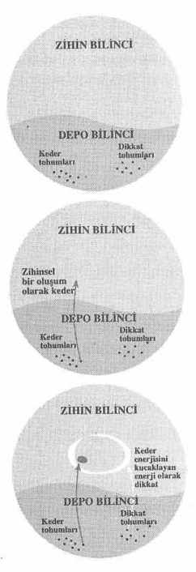

Şekil 4
(1) dana paramita -verme, sunma, cömertlik.
(2) shila paramita -kurallar ya da dikkat alıştırmaları.
(3) kshanti paramita -kapsamlılık, alma kapasitesi, dayanmak ve düşmanlarınızın ve aynı zamanda sevdiklerinizin size verdiği acıyı dönüştürmek.
(4) virya paramita -gayret, enerji, sebat.
(5) dhyana paramita -meditasyon.
(6) prajna paramita -bilgelik, içgörü, anlayış.
Bu Altı Paramitayı uygulamak öteki kıyıya -özgürlük, uyum ve iyi ilişkiler kıyısına- ulaşmamıza yardım eder.
İlk karşıya geçme uygulaması verme, dana paramita mükemmelliğidir. Vermek her şeyden önce sevinç, mutluluk ve sevgi sunmak demektir. Asya’da iyi bilinen bir bitki vardır, soğan familyasındandır, çorbada, kızarmış pirinçte ve omlette çok lezizdir; bu bitkiyi kestikten sonra yirmidört saat geçmeden yeniden büyür. Onu ne kadar çok keserseniz o kadar daha büyük ve güçlü olur. Bu bitki dana paramita’yı temsil eder. Hiçbir şeyi kendimize saklamayız. Sadece vermek isteriz. Verdiğimiz zaman karşımızdaki kişi mutlu olabilir, fakat bizim mutlu olduğumuz kesindir. Buda’nın önceki yaşamlarına dair pek çok hikayede Buda dana paramita uygular.(1)
Birine sunabileceğimiz en büyük hediye kendi gerçek varlığımızdır. Tanıdığım bir oğlana babası şöyle sordu, “Doğum gününde ne istersin?” Oğlan duraksadı. Babası zengindi ve ona istediği herşeyi verebilirdi. Fakat para kazanmak için o kadar çok zaman harcıyordu ki eve çok az uğruyordu. Ve oğlan şöyle dedi, “Baba, ben seni istiyorum!” Mesaj açıktı. Eğer birini severseniz gerçek varlığınızı onun için ortaya koymalısınız. Bu armağanı verdiğiniz zaman, siz de sevinç armağanı alırsınız. Meditasyon yaparak gerçek varlığınızı nasıl ortaya koyacağınızı öğrenin. Dikkatle soluyarak beden ve zihni bir araya getirirsiniz. “Canım, ben senin için buradayım” bu paramita’yı uyguladığınız zaman söyleyebileceğiniz bir mantradır.
Başka ne verebiliriz? İstikrarlılığımızı. “Nefes alırken kendimi bir dağ gibi görüyorum. Nefes verirken kendimi sağlam hissediyorum.” Sevdiğimiz kişinin bizim istikrarlı ve sağlam olmamıza ihtiyacı vardır. Dikkatli yürüyüş, dikkatli oturma uygulaması yaparak nefes alıp vererek istikrarlılığımızı besleyebilir ve her an içinde derinlemesine yaşamaktan zevk alabiliriz. İstikrarlılık nirvananın özelliklerinden biridir.
(1) Jataka Hikayeleri’nin çevirilerinden birine bakın.
Başka ne sunabiliriz? Özgürlüğümüzü. Mutluluk kederlerden -şiddetli arzu, öfke, kıskançlık, umutsuzluk, korku ve yanlış algılama- kurtulmadığımız sürece mümkün değildir. Özgürlük nirvananın özelliklerinden biridir. Mutluluğun kimi türleri gerçekte bedenimizi, zihnimizi ve ilişkilerimizi bozar. Şiddetli arzudan kurtulmak önemli bir uygulamadır. Size mutluluk vereceğini düşündüğünüz şeyin doğasına derinlemesine bakın ve bunun gerçekte sevdiklerinizin ıstırap çekmesine neden olup olmadığını görün. Gerçekten özgür olmak istiyorsanız bunu bilmeniz gerekir. Şimdiki ana geri dönün ve yaşamın ulaşılabilen mucizeleriyle temas edin. O güzel gün doğumu, mavi gökyüzü, dağlar, ırmaklar ve etrafımızdaki bütün o güzel yüzler gibi bizi hemen şimdi mutlu kılabilecek olan o kadar çok sağlıklı şey vardır ki.
Başka ne verebiliriz? Canlılığımızı. “Nefes alırken kendimi bir çiçek gibi görüyorum. Nefes verirken kendimi canlı hissediyorum.” Üç kez nefes alıp verebilir ve o çiçek halinizi hemen kazanabilirsiniz. Ne armağandır bu!
Başka ne sunabiliriz? Huzur. Huzurlu birinin yanında oturmak harika birşeydir. Onun huzurundan yararlanırız. “Nefes alırken kendimi durgun bir su gibi görüyorum. Nefes verirken şeyleri olduğu gibi yansıtıyorum.” Sevdiklerimize huzurumuzu ve berraklığımızı sunabiliriz.
Başka ne sunabiliriz? Alan. Sevdiğimiz kişinin mutlu olmak için alana ihtiyacı vardır. Bir çiçek arajmanında her çiçeğin gerçek güzelliğini yayması için etrafında bir alana gereksinimi vardır. Bir insan da bir çiçek gibidir. içinde ve etrafında alan olmadığı sürece mutlu olamaz. Bu armağanları çarşıdan alamayız. Bunları uygulamamız aracılığıyla ortaya çıkartmalıyız. Ve ne kadar çok sunarsak, o kadar çok kazanırız. Sevdiğimiz kişi
mutlu olduğu zaman hemen o anda mutluluk bize geri döner. Ona veririz, fakat aynı zamanda kendimize de veriyoruzdur.
Vermek harika bir uygulamadır. Buda birine kızgın olduğunuz zaman, eğer herşeyi denemiş ve hala kendinizi kızgın hissediyorsanız, dana paramita uygulaması yapmanızı söylüyordu. Kızgın olduğumuz zaman karşımızdakini suçlama eğilimindeyizdir. Fakat suçladığımız zaman sadece ıstırabımız artar. Buda bunun yerine ona bir armağan göndermenizi öneriyordu. Eğer kendinizi kızgın hissederseniz dışarı çıkıp bir armağan almak istemezsiniz, bu nedenle daha kızgın değilken şimdi bir armağan hazırlama fırsatını değerlendirin. Sonra, hiçbir şey işe yaramadığı zaman gidip ona bu armağanı postalayın; şaşırtıcı biçimde kendinizi hemen o anda daha iyi hissedeceksiniz. Aynısı uluslar için de geçerlidir. İsrail’de huzur ve güvenlik olması için İsraillilerin Filistinliler için huzur ve güvenlik sağlamanın yolunu bulmaları gerekir. Verdiğinizi alırsınız. Karşınızdaki kişiyi cezalandırmaya çalışmak yerine ona ihtiyacı olan şeyi sunun. Verme uygulaması sizi hızla mutluluk kıyısına götürebilir.
Başka biri size ıstırap çektirdiği zaman bunun nedeni kendi içinde derin ıstırap çekmesidir, ıstırabı etrafa saçılıyordur. Onun cezalandırılmaya ihtiyacı yoktur; yardıma ihtiyacı vardır. Gönderdiği mesaj budur. Eğer bunu görebilirseniz ona ihtiyacı olan şeyi sunun -rahatlamayı. Mutluluk ve güvenlik bireysel bir mesele değildir. Onun mutluluğu ve güvenliği sizin mutluluğunuz ve güvenliğiniz için çok önemlidir. Onun için tüm yüreğinizle mutluluk ve güvenlik dileyin, siz de mutlu ve güvenli olursunuz.
Başka ne verebiliriz? Anlayış. Anlayış uygulamanın çiçeğidir. Yoğunlaşmış dikkatinizi tek bir nesne üstüne odaklayın, ona derinlemesine bakın, anlayış ve içgörü kazanırsınız. Başkalarına anlayışınızı sunduğunuz zaman ıstırapları hemen sona erer.
Paramita’lar çiçeğinin ilk yaprağı dana paramita, yani verme uygulamasıdır. Verdiğinizi, uydudan gönderilen sinyallerden çok daha hızlı bir şekilde alırsınız. İster varlığınızı, ister sağlamlığınızı, ister canlılığınızı, ister istikrarlılığınızı, ister özgürlüğünüzü, ister anlayışınızı verin, armağanınız bir mucize yaratabilir. Dana paramita sevgi uygulamasıdır.
İkinci uygulama kuralların mükemmelleşmesi veya dikkat çalışmaları, yani shila paramita’dır. Beş Dikkat Çalışması bedenimizi, zihnimizi, ailemizi ve toplumumuzu korumamıza yardım eder. İlk Dikkat Çalışması insanların, hayvanların, bitkilerin ve minerallerin hayatını korumakla ilgilidir. Başka varlıkları korumak kendimizi korumaktır. İkincisi başka canlı varlıkların ve doğanın insanlar tarafından sömürülmesini engellemektir. Bu aynı zamanda cömertlik uygulamasıdır. Üçüncüsü çocukları ve yetişkinleri cinsel tacizden korumak, bireylerin ve ailelerin mutluluğunu sağlamaktır. Cinsel ahlaksızlık yüzünden pek çok aile yıkılmıştır. Üçüncü Dikkat Çalışmasını uyguladığınız zaman hem kendinizi hem de aileleri ve çiftleri korursunuz. Diğer insanların kendilerini güvenli hissetmelerine yardım edersiniz. Dördüncü Dikkat Çalışması derin dinleme ve sevgi dolu konuşma uygulamasıdır. Beşinci Dikkat Çalışması dikkatli tüketim hakkındadır.(2)
Beş Dikkat Çalışması uygulaması bir sevgi şekli ve bir verme şeklidir. Bunlar iyi bir sağlık kazanmamızı ve
(2) Beş Dikkat Çalışması hakkında daha fazla bilgi için bkz. 12. ve 13. Bölümler,Doğru Konuşma ve Doğru Doğru Edim konusu. Aynı zamanda Bkz. Thich Nhat Hanh, For a Future To Be Possible.
ailemizin ve toplumumuzun korunmasını garanti eder. Shila paramita toplumumuza, ailemize ve sevdiklerimize verebileceğimiz büyük bir armağandır. Toplumumuza sunabileceğimiz en değerli armağan Beş Dikkat Çalışmasını uygulamaktır. Eğer bu Beş Dikkat Çalışmasına uygun olarak yaşarsak kendimizi ve sevdiklerimizi koruruz. Shila paramita’yı uyguladığımız zaman değerli yaşam armağanını sunarız.
Bireysel ve toplumsal olarak ıstırabımızın nedenlerine derinlemesine bakalım. Eğer bunu yaparsak, bu Beş Dikkat Çalışmasının çağımızın sıkıntısı için doğru ilaç olduğunu göreceğimize eminim. Her gelenekte Beş Dikkat Çalışmasının bir dengi vardır. Birinin Beş Dikkat Çalışmasını uyguladığını gördüğüm zaman kendimi çok mutlu -onun için, ailesi için ve aynı zamanda da kendim için- hissediyorum, çünkü Beş Dikkat Çalışmasının dikkat uygulamasının en somut yolu olduğunu biliyorum. Bunları derinlemesine uygulamak için çevremizde bir Sangha olması gerekir.
Çiçeğin üçüncü yaprağı kshanti paramita, yani kapsamlılıktır. Kapsamlılık alma, kucaklama ve dönüştürme kapasitesidir. Kshanti çoğunlukla sabır veya tahammül olarak çevrilir, fakat ben “kapsamlılığın” Buda’nın öğretisini daha iyi aktardığına inanıyorum. Kapsamlılık uygulaması yaptığımız zaman, ıstırabı ve haksızlığı kucaklamamız gerektiğinde bile ıstırap çekmemiz veya tahammül etmemiz gerekmez. Karşımızdaki kişi bizi öfkelendiren birşey söyler ya da yapar. Bize bir tür haksızlıkta bulunur. Fakat eğer yüreğimiz yeterince genişse ıstırap çekmeyiz.
Buda şöyle mükemmel bir tasvirde bulunmuştu. Eğer bir avuç tuz alıp bunu küçük bir kase suyun içine dökerseniz, kasedeki su içilemeyecek kadar tuzlu olur.
Fakat eğer aynı miktarda tuzu büyük bir ırmağa dökerseniz insanlar ırmağın suyundan yine de içebilir. (Unutmayın bu öğreti 2.600 yıl önce, hala ırmaklardan su içilebildiği zamanlarda verildi!) Irmağın büyüklüğü nedeniyle alma ve dönüştürme kapasitesi vardır. Irmak bir avuç tuz yüzünden ıstırap çekmez. Eğer yüreğiniz küçükse haksız bir söz ya da edim ıstırap çekmenize neden olur. Fakat eğer yüreğiniz büyükse, eğer anlayış ve şefkate sahipseniz, bu söz ya da edim size ıstırap çektirecek güce sahip olmaz. Bir an içinde bunu alabilir, kucaklayabilir ve dönüştürebilirsiniz. Burada önemli olan sizin kapasitenizdir. Istırabınızı dönüştürmek için yüreğinizin okyanus kadar büyük olması gerekir. Başka biri ıstırap çekebilir. Fakat eğer bir bodhisattva aynı türden kaba sözlere maruz kalırsa hiç ıstırap çekmez. Bu sizin alma, kucaklama ve dönüştürme şeklinize bağlıdır. Eğer acınızı çok uzun süre muhafaza ediyorsanız, bu henüz kapsamlılık uygulamasını öğrenmemiş olduğunuzdandır.
Buda’nın oğlu Rahula onsekiz yaşındayken Buda ona nasıl kapsamlılık uygulaması yapılacağına dair mükemmel bir Dharma konuşması yaptı. Rahula’nın hocası Shariputra da oradaydı ve o da bu öğretiyi dinleyip benimsedi. Oniki yıl sonra Shariputra bu öğretiyi kalabalık bir keşişler ve rahibeler topluluğu önünde tekrarlama şansı buldu. Bu üç aylık yağmur sezonu inzivasından sonraki gündü ve her keşiş kampı terkedip bu öğretileri başkalarına sunmak için on yöne doğru yola çıkmaya hazırlanıyordu. O sırada bir keşiş Buda’ya şöyle söyledi, “Efendim, bu sabah Muhterem Shariputra giderken ona nereye gittiğini sordum ve o benim soruma cevap verecek yerde beni yere itti ve özür bile dilemedi.”
Buda Ananda’ya “Shariputra uzakta mıdır?” diye sordu ve Ananda, “Hayır, Efendim, daha bir saat önce ayrıldı” diye yanıtladı. Buda bir keşiş adayından Shariputra’yı bulup onu geri çağırmasını istedi. Keşiş adayı Shariputra’yı geri getirdiğinde Ananda hala orada olan bütün keşişleri çağırdı. Sonra Buda geldi ve Shariputra’ya resmi olarak şöyle sordu, “Shariputra, bu sabah tapınaktan ayrılırken bir kardeşinin sana soru sormak istediği ve senin ona yanıt vermediğin doğru mu? Bunun yerine onu yere ittiğin ve ondan özür bile dilemediğin doğru mu?” Shariputra tüm keşişlerin ve rahibelerin önünde Buda’ya şöyle yanıt verdi:(3)
“Efendim, Sizin Bhikshu Rahula’ya oniki yıl önce onsekiz yaşındayken yaptığınız konuşmayı hatırlıyorum. Ona sevgi, şefkat, sevinç ve sakinlik değerlerini beslemek ve geliştirmek için toprak, su, ateş ve havanın doğasını düşünmeyi öğrettiniz.(4) Öğretiniz Rahula’ya yönelik olsa da ben de bunu öğrendim ve bu öğretiyi incelemeye ve uygulamaya çalıştım.
Efendim, toprak gibi uygulama yapmaya çalıştım. Toprak geniş ve açıktır ve alma, kucaklama ve dönüştürme kapasitesine sahiptir, insanlar toprağa ister çiçek, parfüm ya da taze süt gibi saf ve hoş kokulu maddeler atsınlar, ister dışkı, sidik, kan, balgam, tükürük gibi pis ve kötü kokulu maddeler atsınlar, toprak bunların hepsini de iğrenmeden ya da sahiplenmeden eşit olarak alır. Toprağa ne atarsanız atın toprağın bunu alma, kucaklama ve dönüştürme gücü vardır. Bir toprak gibi uygulama yapmak, direnmeden, şikayet etmeden ya da ıstırap çekmeden almak için elimden geleni yaptım.
Efendim, dikkat ve müşfiklik uygulaması yapıyorum.
(3) Shariputra’nın Aslan Kükreyişi, Anguttara Nikaya IX, 11. Ayrıca, Mahaparinirvana Sutra.
(4) Buda aynı zamanda, başkalarının bize verdiği acı ve haksızlıktan ıstırap çekmememiz için yüreklerimizi daha büyütmemize yardım etmek için Dört Sınırsız Zihni de -sevgi, şefkat, sevinç ve ılımlılık- öğretti. Bkz. 22.Bölüm. Ayrıca bkz.Thich Nhat Hanh, Teacgings on Love.
Bedenin içinde beden dikkatini, bedenin edimleri içinde beden edimleri dikkatini uygulamayan bir keşiş başka bir keşişi yere itip onu orada bırakabilirdi. Fakat bir keşişe karşı kaba olmak, onu yere itmek ve özür dilemeden çekip gitmek benim yolum değil.
Efendim, Rahula’ya su gibi uygulama yapmak konusunda verdiğiniz dersi öğrendim. Biri suya ister hoş kokulu bir madde, ister pis bir madde döksün su onları iğrenmeden ya da sahiplenmeden eşit olarak alır. Su engindir, akar ve herşeyi alma, kapsama, dönüştürme ve saflaştırma kapasitesine sahiptir. Ben elimden geldiğince su gibi uygulama yapmaya çalıştım. Dikkat uygulaması, su gibi olma uygulaması yapmayan bir keşiş bir keşişi yere itebilir ve özür dilemeden yoluna gidebilir. Ben böyle bir keşiş değilim.
Efendim, ben ateş gibi olma uygulaması yaptım. Ateş iğrenmeden ya da sahiplenmeden herşeyi, saf olmayan kadar saf olan, güzel olan kadar çirkin olan şeyleri de yakar. Eğer ateşe çiçek ya da ipek atarsanız yanar. Eğer eski bir paçavra ya da kötü kokulu şeyler atarsanız ateş herşeyi kabul eder ve yakar. O ayrım yapmaz. Neden? Çünkü ateş ona sunulan herşeyi alabilir, tüketebilir ve yakabilir. Ben de ateş gibi uygulama yapmaya çalıştım. Olumsuz şeyleri dönüştürmek için yakabiliyorum. Bakma, dinleme ve düşünme dikkati uygulamayan bir keşiş bir keşişi yere itebilir ve özür dilemeden yoluna devam edebilir. Efendim, ben böyle biri değilim.
Efendim, ben hava gibi olma uygulaması yapmaya çalıştım. Hava iğrenmeden ya da sahiplenmeden iyi-kötü tüm kokuları taşır. Havanın dönüştürme, saflaştırma ve salma kapasitesi vardır. Efendimiz Buda, ben bedenin içinde bedeni, bedenin hareketi içinde bedenin hareketini, bedenin duruşları içinde bedenin duruşlarını, duyguların içinde duyguları ve zihnin içinde zihni düşündüm. Dikkat uygulaması yapmayan bir keşiş bir keşişi yere itebilir ve özür dilemeden gidebilir. Ben böyle bir keşiş değilim.
Efendim, ben giyecek hiçbir şeyi olmayan, paçavra giysileri üstüne takacak hiçbir rütbesi ya da madalyonu olmayan dokunulmaz bir çocuk gibiyim. Mütevazilik uygulaması yapmaya çalıştım, çünkü mütevaziliğin dönüştürme gücü olduğunu biliyorum. Her gün öğrenmeye çalıştım. Dikkat uygulaması yapmayan bir keşiş bir keşişi yere itebilir ve özür dilemeden gidebilir. Efendim, ben böyle biri değilim.”
Shariputra “Aslan Kükreyişine” devam etti, fakat öteki keşiş buna daha fazla dayanamadı ve sağ omzunu açtı, diz çöktü ve affedilmesi için yalvardı. “Efendim, ben Vinaydyı (tapınağın disiplin kuralları) çiğnedim. Öfke ve kıskançlıktan yaşlı kardeşimi Dharma’da gözden düşürmek istedim. Topluluğun Yeniden Başlama uygulaması yapmama izin vermesi için yalvarıyorum.” Buda’nın ve tüm Sangha’nın önünde Shariputra’nın önünde üç kez yere kapandı. Shariputra kardeşinin yere kapandığını görünce eğildi ve şöyle dedi, “Ben yeterince becerikli değildim, bu nedenle yanlış anlayışın ortaya çıkmasına neden oldum. Bunda benim de sorumluluğum var ve kardeşim keşişe beni affetmesi için yalvarıyorum.” Sonra keşişin önünde üç kez yere kapandı ve barıştılar. Ananda Shariputra’dan yola çıkmadan önce bir fincan çay içmesini rica etti.
Acımızı bastırmak kapsamlılık öğretisi değildir. Acımızı kabul etmeli, kucaklamalı ve dönüştürmeliyiz. Bunu yapmanın tek yolu yüreğimizi büyültmektir. Anlamak ve affetmek için derinlemesine bakarız. Aksi halde öfke ve nefrete kapılır ve ancak karşımızdakini cezalandırırsak kendimizi daha iyi hissedeceğimizi düşünürüz. Öc sağlıksız bir besindir. Başkalarına yardım etme niyeti sağlıklı bir besindir.
Kshanti paramita’yı uygulamak için diğer paramita’lara ihtiyaç duyarız. Eğer kapsamlılık uygulamamız anlayış, verme ve meditasyon işaretlerini taşımıyorsa sadece acımızı bastırmaya ve onu bilincimizin derinliklerine itmeye çalışıyoruzdur. Bu tehlikelidir.. Bu tür enerji daha sonra patlar ve bizi ve başkalarını yıkar. Eğer derinlemesine bakma uygulaması yaparsanız yüreğiniz uçsuz bucaksız biçimde büyür ve daha az acı çekersiniz.
Benim keşişliğe atadığım ilk mürit Thich Nhât Tri isminde bir keşişti. Nhât Tri orta Vietnam’daki sel kurbanlarını kurtarmak için rahibe Chân Khön ve benimle birlikte pek çok misyona gitti ve benim isteğim üzerine fakir bir köyde aylar geçirdi. Sosyal Hizmet için Gençlik Okulunu kuruyorduk ve kırsal bölgelerdeki insanların gerçek durumunu öğrenmemiz gerekiyordu. Fakir insanların yaşam standartlarını yükseltmelerine yardım etmek için zorlamamak ve müşfik olmak için yollar bulmak istiyorduk. Bu toplumsal iyileşme için güzel bir hareketti. Sonunda 10.000 çalışanımız oldu. Komünistler Budist hareketimizin Amerika yanlısı olduğunu, medya ise Budist keşişlerin bir komünist ayaklanması düzenlemek amacıyla kılık değiştirmiş komünistler olduğunu söylüyordu. Bizler hiçbir savaşan tarafın yanlısı olmaksızın sadece kendimiz olmaya çalışıyorduk. 1967’de Nhât Tri yedi sosyal çalışanla birlikte aşırı sağcı bir grup tarafından kaçırıldı ve o zamandan beri ondan haber alınamadı.
Bir gün Nhât Tri Saigon sokaklarında yürürken askeri bir kamyonun üstünde duran bir Amerikan askeri onun başına tükürdü. Nhât Tri eve geldi ve ağladı. Genç olduğu için askerle kavga etmek istiyordu, bu nedenle onun bu derinden incinme duygusunu dönüştürmek için onu yarım saat kollarımda tuttum. “Çocuğum,” dedim, “sen bir silah tutmak için doğmadın. Sen bir keşiş olmak için doğdun ve senin gücün anlayış ve sevginin gücüdür. Amerikalı asker seni düşmanı olarak düşündü. Bu onun yanlış algılamasıydı. Bizim sadece sevgi ve anlayışla silahlanmış olarak cepheye gidebilecek ‘askerlere’ ihtiyacımız var.” Sosyal Hizmet için Gençlik Okulunda kaldı. Sonra kaçırıldı ve muhtemelen öldürüldü. Thich Nhât Tri Plum Köyündeki keşişlerin ve rahibelerin değerli bir kardeşidir. El yazısı neredeyse tıpkı benimkine benziyordu. Ve çobanların kırlarda söylemeleri için çok güzel şarkılar yazıyordu.
Bu tür bir haksızlığı nasıl kaldırabiliriz? Tüm ulusların kabul ettiği haksızlığı nasıl dönüştürebiliriz? Kamboçyalılar, Bosnalılar, Filistinliler, İsrailliler, Tibetliler, hepimiz haksızlık ve hoşgörüsüzlükten muzdaribiz. Birbirimizle kardeş olacağımıza birbirimize silah çekiyoruz. Öfkeye kapıldığımız zaman tek tepkinin karşımızdakini cezalandırmak olduğunu sanıyoruz. Öfke ateşi içimizde yanmaya ve kardeşlerimizi yakmaya devam ediyor. Dünyanın durumu budur ve hepimizin kurban olduğunu anlamak için derinlemesine bakmaya gerek olmasının nedeni budur.
Nhât Tri’ye şöyle dedim, “Eğer New Jersey veya Kaliforniya sahillerinde bir ailede doğmuş olsaydın ve askerlerin okuduğu tür gazete ve dergileri okusaydın, sen de bütün Budist keşişlerin komünist olduğuna inanır ve sen de bir keşişin başına tükürürdün.” Ona Amerikan askerlerinin tüm Vietnamlıları düşman olarak görecek şekilde eğitildiğini anlattım. Buraya ölmek veya öldürmek için gönderiliyorlardı. Onlar da tıpkı Vietnamlı askerler ve siviller gibi kurbandılar. Silahını doğrultup bize ateş edenler, sana tükürenler değildir savaşı çıkartanlar. Savaşı çıkartanlar Beijing’de, Moskova’da ve Washington’da rahat ofislerinde oturuyorlar. Bu yanlış anlayıştan doğan yanlış bir politikaydı. 1966 yılında Washington’a gittiğim zaman Robert McNamara ile tanıştım, ona savaşın doğası hakkında anlattıklarım tümüyle doğruydu. Altı ay sonra Savunma Sekreteri olarak istifa etti ve bir kitap yazıp Vietnam’daki savaşın korkunç bir hata olduğunu itiraf etti. Belki ben onun içine bazı anlayış tohumlarının ekilmesine yardım ettim.
Yanlış bir politikanın sorumlusu yanlış bir algıydı ve binlerce Amerikalı ve Vietnamlı askerin ve birkaç milyon Vietnamlı sivilin ölümünün sorumlusu da yanlış politikaydı. Kırsal alandaki halk neden bu şekilde ölmeleri gerektiğini, neden gece ve gündüz üstlerine bomba yağdığını anlayamıyordu. Sosyal Hizmet için Gençlik Okulundaki Buda salonuna yakın bir odada uyurken bu salona bir roket atıldı. Ölebilirdim. Eğer öfkenizi ve nefretinizi beslerseniz kendinizi yakarsınız. Anlayış tek çıkar yoldur. Eğer anlarsanız daha az ıstırap çekersiniz ve haksızlığın köküne nasıl ineceğinizi bilirsiniz. Buda eğer size bir ok çarparsa ıstırap çekeceğinizi söylüyordu. Fakat aynı noktaya bir ok daha saplanırsa yüz kat daha fazla ıstırap çekersiniz.(5) Haksızlığa kurban olduğunuz zaman eğer öfkelenirseniz yüz kez daha fazla ıstırap çekersiniz. Bedeninizde bir acı olduğu zaman nefes alıp verin ve “Bu sadece fiziksel bir acı” deyin kendinize. Bunun kanser olduğunu ve yakında öleceğinizi hayal ederseniz, acınız yüz kez daha kötüleşir. Cehaletten doğan korku veya nefret acınızı arttırır. Prajna paramita kurtarıcıdır. Şeyleri daha fazla değil, sadece oldukları gibi nasıl göreceğinizi bilirseniz hayatta kalabilirsiniz.
Ben Vietnam halkını seviyorum ve savaş sırasında onlara yardım etmek için elimden geleni yaptım. Fakat Vietnam’da kurban olan Amerikalı çocuklar da gördüm. Onlara hınçla bakmadım ve çok daha az ıstırap çektim. Bu pek çoğumuzun yendiği türde bir ıstıraptır ve öğreti
(5) Samyutta Nikaya V, 210.
akademik çalışmalardan değil, bu ıstıraptan doğmuştur. Ben Nhât Tri ve affetme, sevgi ve anlayış mesajını vermek için ölen pek çokları için hayatta kaldım. Onların boşu boşuna ölmemiş olmaları için bunu paylaşıyorum.
Lütfen derinlemesine bakma uygulaması yapın, o zaman hastalıktan, haksızlıktan ve içinizdeki ufak tefek acılardan daha az ıstırap çekersiniz. Derinlemesine bakma anlayışa yöneltir ve anlayış da her zaman sevgi ve kabullenişe yöneltir. Bebeğiniz hasta olduğu zaman, elbette ona yardım etmek için elinizden geleni yaparsınız. Fakat aynı zamanda bir bebeğin ihtiyacı olan bağışıklığı kazanması için bir kaç kez hasta olması gerektiğini de bilirsiniz. Gelişmiş antikorlara sahip olduğunuz için kendinizin de hayatta kalabileceğinizi bilirsiniz. Endişelenmeyin. “Mükemmel sağlık” sadece bir fikirdir. Sahip olduğunuz hastalıklarla barış içinde yaşamayı öğrenin. Onları dönüştürmeye çalışın, fakat çok fazla ıstırap çekmeyin.
Yaşadığı süre içinde Buda da ıstırap çekti. Onunla rekabet etmek, hatta onu öldürmek için entrikalar çevriliyordu. Bir seferinde bacağından yaralandığı ve insanlar ona yardım etmeye çalıştığı zaman, bunun küçük bir yara olduğunu söyledi ve acısını en aza indirgemek için elinden geleni yaptı. Başka bir seferinde, keşişlerinden beşyüz tanesi başka bir Sangha kurmaya gitti ve o telaşa kapılmadan işine baktı. Sonunda zorluklar alt edildi.
Buda kapsamlılığın, bütünü görmenin nasıl geliştirileceğine dair çok somut öğretiler sunmuştur -maitri (sevgi), karuna (şefkat), mudita (sevinç) ve upeksha (sakinlik).(6) Eğer bu Dört Sınırsız Zihni uygularsanız kocaman bir yüreğiniz olur. Bodhisattva’ların büyük bir şefkati olduğu için alma, kucaklama ve dönüştürme kapasiteleri vardır. Büyük bir anlayışa sahip oldukları için ıstırap çekmeleri gerekmez. Bu dünya ve sevdiklerimiz için büyük bir armağandır.
Çiçeğin dördüncü yaprağı virya paramita, yani gayretin, enerjinin mükemmelleşmesi ya da sürekli uygulamadır. Buda arşiv bilincimizin derinliklerinde, yani alayavijnana’da, her türlü olumlu ve olumsuz tohum olduğunu -öfke, aldanış ve korku tohumları ile anlayış, şefkat ve affetme tohumları- söylüyordu. Bu tohumların çoğu bize atalarımızdan geçmiştir. Gayret uygulaması için bu tohumların her birini tanımayı öğrenmeliyiz. Eğer olumsuz bir tohumsa, öfke, korku, kıskançlık ya da ayrımcılık gibi bir keder tohumuysa günlük hayatımızda onu sulamaktan geri durmalıyız. Böyle bir tohum sulandığı zaman bilincimizin daha üst bir seviyesinde tezahür eder ve ıstırap çeker ve aynı zamanda da sevdiklerimize ıstırap çektiririz. Yapılacak uygulama içimizdeki olumsuz tohumları sulamaktan geri durmaktır.
Sevdiğimiz insanlardaki olumsuz tohumları da tanır ve onları sulamamak için elimizden geleni yaparız. Eğer sularsak, mutsuz olurlar ve biz de mutsuz oluruz. Bu “seçici sulama” uygulamasıdır. Eğer mutlu olmak istiyorsanız kendi olumsuz tohumlarınızı sulamaktan kaçının ve başkalarından da bu tohumları sulamamalarını isteyin. Aynı zamanda başkalarının içindeki olumsuz tohumları da sulamayın.
Ayrıca içimizdeki olumlu tohumları tanımaya ve onlarla temas edebileceğimiz ve bilincimizin üst seviyesinde, yani manovijnana’da, oluşmalarına meydana çıkmalarına etmelerine yardım edecek şekilde günlük hayatımızı yaşamaya çalışırız. Bunlar meydana çıkıp bir süre
(6) Dört Sınırsız Zihin hakkında bkz. 22. Bölüm.
bilincimizin üst seviyesinde kaldıkları zaman daha güçlenirler. Eğer içimizdeki olumlu tohumlar gece ve gündüz daha güçlenirlerse mutlu oluruz ve sevdiklerimizi mutlu ederiz. Sevdiğiniz insanın içindeki olumlu tohumları tanıyın, bunları sulayın, o zaman o kişi daha mutlu olur. Plum Köyünde başkalarının içindeki en iyi tohumları tanıyıp onları sulayarak “çiçek sulama” uygulaması yaparız. Lütfen zamanınız oldukça sulanmaya ihtiyacı olan tohumları sulayın. Bu çok harika ve hoş bir gayret uygulamasıdır ve anında sonuç verir:
İkiye bölünmüş bir çember hayal edin. Aşağıda arşiv bilinci, yukarıda ise zihin bilinci olsun. Tüm zihinsel oluşumlar arşiv bilincimizin derinlerinde yatar. Arşiv bilincimizdeki her tohumla temas edilebilir ve bu tohum daha üst seviyede, yani zihin bilincinde oluşur. Sürekli uygulama arşiv bilincimizdeki olumsuz tohumlarla günlük hayatımızda temas edilmesine izin vermemeye, oluşmaları için onlara bir şans vermemeye çalışmak demektir. Öfke, ayrımcılık, umutsuzluk, kıskançlık ve şiddetli arzu tohumlarının hepsi oradadır. Bunların ortaya çıkmasını önlemek için elimizden geleni yaparız. Birlikte yaşadığımız insanlara şöyle deriz, “Eğer beni gerçekten seviyorsan içimdeki bu tohumları sulama. Bu benim ve senin sağlığın için iyi değil.” Sulanmaması gereken tohumları tanımalısınız. Eğer olumsuz bir tohum, bir keder tohumu sulanır ve meydana çıkarsa bunu dikkatimizle kucaklamak ve geldiği yere dönmesine yardım etmek için gücümüz dahilinde herşeyi yaparız. Bu tür tohumlar zihin bilincimizde ne kadar kalırlarsa o kadar güçlenirler.
Buda “tahta çiviyi değiştirmek” denilen bir uygulama öneriyordu. Bir tahta çivi uygun büyüklükte değilse veya çürümüşse ya da onarılmaya ihtiyacı varsa, bir marangoz onun yerine aynı noktaya başka bir tahta çivi koyar ve yeni çiviyi eski çivinin içine sokar. Eğer sağlıksız olduğunu düşündüğünüz zihinsel bir oluşum ortaya çıkarırsanız, yapılacak uygulama onun yerine koyacak başka bir zihinsel oluşumu davet etmektir. Arşiv, depo bilincinizdeki pek çok tohum sağlıklı ve güzeldir. Sadece nefes alıp verin ve bunlardan birini ortaya çıkmaya davet edin, öteki tohum geri gidecektir. Buna “tahta çiviyi değiştirmek” denir.
Üçüncü uygulama, zihin bilincinizde tezahür etmeleri, doğmaları için, arşiv,depo bilincinizdeki mümkün olduğunca çok olumlu tohumla temasa geçmektir. Eğer televizyonda belli bir programı isterseniz onun yayınlandığı düğmeye basarsınız. Sadece hoş tohumları yüzeye çıkmaya davet edin ve bilincinizin oturma odasında oturun. Size üzüntü ve keder veren bir misafiri asla davet etmeyin. Ve arkadaşlarınıza şöyle söyleyin, “Eğer beni seviyorsanız, lütfen içimdeki sağlıklı tohumları her gün sulayın.” Dikkat harika bir tohumdur. Dikkat içimizdeki Buda’dır. Bu tohumla temasa geçmek bilincinizin üst seviyesinde oluşmasına, kendini var etmesine yardım etmek için her fırsatı kullanın.
Dördüncü uygulama sağlıklı bir tohum bir kez oluştuğunda bunu mümkün olduğunca uzun süre muhafaza etmektir. Eğer dikkat onbeş dakika korunursa dikkat tohumu güçlenir ve dikkat tohumuna ihtiyaç duyduğunuz başka bir sefer onu ortaya çıkarmak daha kolay olur. Dikkat, affetme ve şefkat tohumlarının büyümesine yardım etmek çok önemlidir ve bunu yapmanın yolu bunların zihin bilincinizde mümkün olduğunca uzun süre kalmasına yardım etmektir. Buna temelde dönüşüm -ashraya paravritti- denir. Virya paramita’nın, yani mükemmel gayretin gerçek anlamı budur.
Dikkat Tohumları

Şekil 5
Beşinci karşı kıyıya geçme uygulaması dhyana paramita, yani mükemmel meditasyondur. Dhyana Japonca’da zen, Çince’de chan, Vietnamca’da thien ve Korece’de son olarak telafuz edilir. Dhyana ya da meditasyon iki yönden oluşur.(7) İlk yön durmadır (shamatha). Tüm hayatımız boyunca şu ya da bu mutluluk düşüncesi ardında koşarız. Durma bu koşuşturmamızı, unutkanlığımızı, geçmiş ya da gelecekte hapsolmuş varlığımızı durdurmadır. Eve, yaşamın erişilebilir olduğu şimdiki ana geliriz. Şimdiki an her anı içerir. Burada atalarımızla, çocuklarımızla ve, henüz doğmamış bile olsalar, torunlarımızla temasa geçebiliriz. Shamatha dikkatli soluma, dikkatli yürüme ve dikkatli oturma uygulaması aracılığıyla bedenimizi ve duygularımızı sakinleştirme uygulamasıdır. Shamatha aynı zamanda yoğunlaşma uygulamasıdır, böylece yaşantımızın her anını daha derinlemesine yaşayabilir ve varlığımızın en derin seviyeleriyle temasa geçebiliriz.
Meditasyonun ikinci yönü şeylerin gerçek doğasını görmek için derinlemesine bakmaktır (vipashyana). Sevdiğiniz insana bakar ve içinde ne tür ıstırap ve zorluklar olduğunu ve ne tür arzular beslediğini bulursunuz. Anlayış büyük bir armağandır, fakat dikkat içinde yaşadığınız günlük hayatınız da büyük bir armağandır. Dikkat her zaman konsantrasyon ve anlayışı beslediği için herşeyi dikkatle yapmak meditasyon uygulamasıdır.
Çiçeğin altıncı yaprağı prajña paramita, yani mükemmel anlayıştır. Bu tüm bilgi, kavram, fikir ve görüşlerden uzak en yüksek anlayış şeklidir. Prajña içimizdeki Budacılığın esasıdır. Bu bizi karşı kıyıya, özgürlük, hürriyet ve huzur kıyısına taşıyacak güce sahip olan an-
(7) Bkz. 6. Bölüm.
layış türüdür. Mahayana Budizminde prajna paramita Tüm Budaların Annesi olarak tanımlanır. İyi, güzel ve doğru olan herşey annemizden, prajna paramita’dan doğmuştur. O bizim içimizdedir; sadece tezahür etmesi için onunla temas etmeliyiz. Doğru Görüş prajna paramita’dır.
Prajna paramita üstüne geniş bir edebiyat vardır ve Yürek Sutrası bu derlemedeki kısa vaazlardan biridir. Elmas Sutrası ve Ashtasahasrika Prajnaparamita (8.000 Beyit Halinde Vaaz) bu derlemedeki ilk vaazlar arasındadır. Prajna paramita ayrım yapmama bilgeliğidir.
Eğer sevdiğiniz kişiye derinlemesine bakarsanız onun ıstırabını, zorluklarını ve en derin arzularını anlayabilirsiniz. Ve bu anlayıştan gerçek sevgi ortaya çıkabilir. Birisi bizi anlayabildiği zaman mutlu oluruz. Eğer birine anlayış sunabiliyorsak bu gerçek sevgidir. Anlayışımızı alan kişi bir çiçek gibi açar ve biz de ödüllendiriliriz. Anlayış uygulamanın meyvasıdır. Derinlemesine bakmak orada olmak, dikkatli olmak, konsantre olmak demektir. Bir nesneye derinlemesine bakınca anlayış çiçek açar. Buda’nın öğretisi gerçekliği derinlemesine anlamamıza yardım etmektir.
Bir okyanusun yüzeyindeki bir dalgaya bakalım. Bir dalga bir dalgadır. Bir başlangıcı ve sonu vardır. Yüksek ya da alçak, başka dalgalardan daha çok veya az güzel olabilir. Fakat bir dalga aynı zamanda sudur. Su dalganın varlığının temelidir. Bir dalganın sadece bir dalga değil, su olduğunu bilmesi önemlidir. Bizler de hayatımızı birey olarak yaşarız. Bir başlangıcımız ve bir sonumuz olduğunu, diğer canlı varlıklardan ayrı olduğumuzu biliriz. Buda’nın bize varlığımızın temeliyle, yani nirvanayla, temas etmemiz için daha derinlemesine bakmamızı öğütlemesinin nedeni budur. Herşey derinliğinde nirvana doğasını taşır. Herşey “nirvanalaşmıştır”.
Nilüfer Sutrasının öğretisi budur. Derinlemesine bakar ve gerçekliğin öylesiliğiyle temasa geçeriz. Bir çakıl taşına, bir çiçeğe veya kendi sevincimize, huzurumuza, üzüntü ya da korkumuza derinlemesine bakarak varlığımızın nihai boyutuyla temasa geçeriz ve bu boyut bize varlığımızın temelinin doğumsuzluk ve ölümsüzlük doğasına sahip olduğunu açıklar.
Nirvanaya ulaşmamız gerekmez, çünkü bizler her zaman nirvanadayızdır. Dalganın suyu araması gerekmez. O zaten sudur. Bizler varlığımızın temeliyle birizdir. Dalga su olduğunu kavrayınca tüm korkuları kaybolur. Varlığımızın temeliyle temasa geçtiğimizde, Tanrıyla veya nirvanayla temasa geçtiğimizde biz de korkusuzluk armağanını alırız. Korkusuzluk gerçek mutluluğun temelidir. Başkalarına sunabileceğimiz en büyük armağan korkusuzluğumuzdur. Yaşantımızın her anını derinlemesine yaşamak, varlığımızın en derin seviyesiyle temasa geçmektir prajña paramita uygulaması. Prajña paramita anlayışla, içgörüyle karşı kıyıya geçmektir.
Mükemmel anlayış diğer tüm mükemmelliklerde mevcuttur. Mükemmel anlayış bir mahfaza gibidir. Eğer mahfaza fırında iyi pişmemişse çatlaklar oluşur ve içindeki sıvı dışarı dökülür. Prajña paramita tüm paramita’ların annesi, Tüm Budaların Annesidir. Prajña paramita bir kuşu her yere taşıyabilen kanatları gibidir. Doğru Anlayış olmadan diğer paramitaların hiç biri hiçbir yere götüremez.
Buda’nın sunduğu Altı Paramita uygulaması bunlardır. Bu altısının her biri diğer beşini de içerir. Anlayış vermektir, meditasyon vermektir, sürekli uygulama vermektir, kapsamlılık vermektir ve dikkat çalışması vermektir. Eğer vermeyi derinlemesine uygularsanız anlayış, meditasyon v.s.yi de uygularsınız. Aynı şekilde, vermenin dikkat çalışması, anlayışın dikkat çalışması, meditasyonun dikkat çalışması, sürekli uygulamanın dikkat çalışması ve kapsamlılığın dikkat çalışması olduğunu görürüz. Eğer bir paramita’yı derinlemesine uygularsanız diğer altısını da uygularsınız. Anlayış ve içgörü olduğu zaman meditasyon doğru meditasyon, sürekli uygulama doğru sürekli uygulama, kapsamlılık doğru kapsamlılık, dikkat çalışması doğru dikkat çalışması ve verme doğru verme olur. Anlayış diğer beş uygulamanın niteliğini arttırır.
Kendi durumunuza bakın ve içinizde ne kadar zengin olduğunuzu görün. Şimdiki anda sahip olduklarınızın bir armağan olduğunu görün. Daha fazla beklemeden uygulamaya hemen şimdi başlayın. Uygulamaya başladığınız an hemen kendinizi mutlu hissedeceksiniz. Dharma bir zaman meselesi değildir. Uygulayın ve kendiniz görün. Dharma yaşamınızı dönüştürebilir.
Üzüntünüze, ıstırabınıza, depresyonunuza, öfkenize ya da korkunuza hapsolduğunuz zaman ıstırap kıyısında kalmayın. Özgürlük, korkusuzluk ve öfkesizlik kıyısına adım atın. Sadece dikkatli soluma, dikkatli yürüme ve derinlemesine bakma uygulaması yapın, o zaman özgürlük ve huzur kıyısına adım atarsınız. Öteki kıyıya geçmek için beş, on ya da yirmi yıl uygulama yapmanız gerekmez. Hemen şimdi geçebilirsiniz.